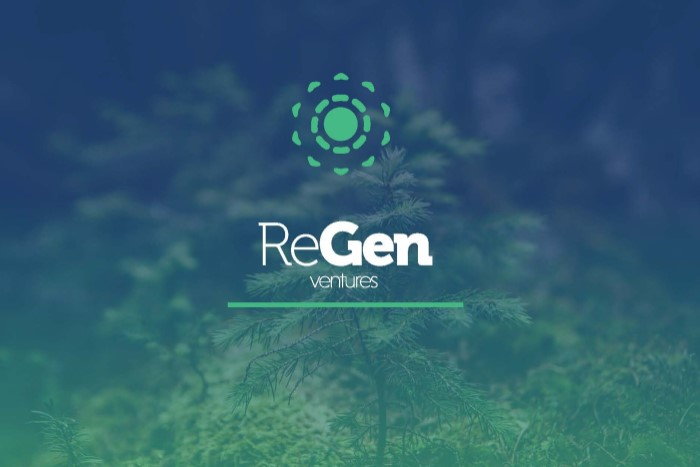

Tom McQuillen is an Australian VC fighting to stop the effects of climate change. He currently works at Regen, a venture capital firm which invests in early-stage climate-tech start-ups. Regen's investing sweet-spot is at the seed stage and the team aims to invest a billion dollars this decade into the next generation of innovative climate companies.
In this edited conversation with Peter Green, Tom spoke about his journey into VC, growth trends in various climate-tech areas and gave some advice for folks starting out on their climate journey.
What's your background as an entrepreneur and how did Biomarine evolve to where it is now?
I studied as a marine oceanographer and an engineer in IT and robotics. After this I was involved in pharmaceutical marketing, was the CEO of a large software group and have been an entrepreneur for most of my life. I spent some time in Canada where I was involved in the environmental, defence, IT, and biotechnology sectors. When I came back to France, I worked with a former Prime Minister of France and his foundation, where he asked me how we could reconcile the relationship between society and technology. We did a great job outlining the future of technology and how we could best use it to serve the immediate needs of the population.
After this, the year before he passed away, he asked me to use my background as an oceanographer to make use of the oceans. This is because the oceans remain the largest reservoir of potentially-usable technology available on the planet. So, 15 years ago I decided to launch Biomarine as a major trans-sector event under the French presidency of the European Council. At the event we had everything from talks on space topics to biotechnology, food, cosmetics and much more. It was quite a big event and we were joined by the likes of Craig Venter and Tony Haymet.
However, after that event it became evident that we needed to refocus. At the time the public didn't care about the ocean- it was too early. So, we needed to set up the stage, build the investor industry and attract people to the industry. So that's what we did and we built up Biomarine into the largest marine biotech network in the world. At these events we try to educate politicians and leaders on the need to prepare themselves in the fight against climate change. At Biomarine we also host this international platform called the Biomarine business convention where we run several events. Last June, we ran seaweed around the clock, and we are already working on the second edition, that will be 24 hours of live conversations about the next generation of bio packaging, and where seaweed, microalgae and agricultural waste will fit into this new industry.
In order to address climate change further the Biomarine organisation has been focusing on three main projects and investments. The first area is seaweed and its entire value chain. Alliga is the spin-off that has come from brainstorming and incubating ideas in this area. We've also been involved in bioplastic and cellular mariculture projects which I'll expand on later.

How did COVID affect the Biomarine event in 2020?
In the first few months it was a challenge because we normally run the Biomarine conference in person. For these events we typically we get together 250 CEO's who speak, interact, buy, sell and strike-up agreements. In one Biomarine event we might generate somewhere between 50 to 500 million euros in deals in two days. Pre-COVID it was very efficient.
During COVID we decided to switch to another model which was fully digital. When we launched seaweed around the clock, an initiative which brings together panelists from all over the world for 24 hours, it was done easily through Zoom so it's been a valuable transition. We had this idea of trying to interact with people going about their daily business. The panelists would do presentations of their business but also show what their life was like on the ground, including highlighting what life was like during seaweed harvesting

What's the mission of the Biomarine events?
Through all these events we want people to understand that climate change is not a fatality. We even have the keys to solve this issue in less than five years. For example, in the case of seaweed, there is potentially 66 million hectares of available water where it can be planted. If we start to massively cultivate seaweed, and plant just 10 million acres, we're gonna reduce global C02 emissions by half. Alexandra Cousteau and her team is currently working on calculating the exact formula for this in the coming months, but what we've seen is the highly versatile and important role Kelp can play, not only in climate-change mitigatino but also in preservation of coastal environments, restoring biodiversity, helping local fisheries, and integrating local and indigenous people.
Could you expand a bit on how you envision improving the seaweed value-chain?
Mainly, we need to coordinate things better because we don't want to ship fresh seaweed around the world. We need hubs for algae production and processing which can service local markets and provide for local communities. For example, we are presently working on a project in Western Australia where we are commited to supporting local Aboriginal communities through seaweed farming. We are seeking their help and knowledge in protecting coastal environments because these indiginous populations have known how to farm and act in synergy with the ocean for thousands of years. In addition, through supporting them in seaweed farming, we are trying to give back what these people once had in abundance. We want to help them work their way into higher value products in the value-chain.
I don't want my friends in Kimberley, WA to just sell cheap, raw material which can fetch two/three euros per kilo. I want to support them in building the processing plants that will help them sell the right high-value antiviral components for pharmaceutical companies which might reach 5000 euros per kilo. The produce from seaweed ranges from cheap, raw material to excellent quality products that will serve anti-COVID products, anti norovirus, gut-health products and even play an essential role in the future colonisation of the solar system. We are on a crusade to give back to local communities what they deserve, and provide a decent price for the material that we're going to buy from them.

In your opinion, what does the future of the seaweed industry look like?
The potential for seaweed products is huge. I could spend hours telling you what will come next as we start to replace toxic chemicals in the textile industry with seaweed, use seaweed for the space industry, and use seaweed to improve the quality of food. The beauty with seaweed is that there is no waste. If you consider the ingredients of seaweed one by one it is incredible. First you have the sugar found in the plant which can be used to produce bioplastics. After that you have the phenols that can go straight to cosmetics and pharmaceutical industries, then you have oil, which could be used for energy or cosmetic and pharmaceutical products. Then you also have residues that could be used for textiles. So, wherever you look in the seaweed value chain, it's a pure circular bio-economy and you can make people happy at all levels.
Is there one area in particular where you think seaweed use is growing quite rapidly?
I think everything will continue to grow quickly but naturally some areas will grow faster. For example, using seaweed in agriculture will continue to grow quickly. We've been using seaweed to fertilise the fields in Canada for centuries. The extracts from seaweed can act as perfect biostimulants and even help to reduce methane emissions in ruminant cattle. However, I do not necessaily agree with the way we are pushing this sector forward. I think it would be more important to feed people with algae instead of feeding methane-producing cattle. If people start to think about the value that seaweed provides in terms of protein, it's stunning. Not only that but when you eat seaweed, it's an antioxidant, it's antiviral, it helps clean your guts, and helps you balance all the organic components that you need in your body. The Japanese and the Chinese have been eating seaweed for thousands of years.
Bioplastics is another area that is growing very fast. Over the last five years, I've been checking in with 17 different companies in this space and we've even invested in one that we are taking public. In order of replacing food packaging, we have to produce 1000s of tonnes of bioplastic per week. We need to grow extremely fast, and to cultivate a large amount of seaweed. The beauty of the seaweed polymer is that there is no end of life. It's either edible or water soluble.
What books might you recommend to someone who's trying to build ventures in this space?
"Drawdown" is always worth mentioning. Otherwise there's a book called "2040" which is a really positive and optimistic look at what our life could look like in 2040 if we make some of these changes. The idea is not just to avoid climate catastrophe but also to create a better way of living as we approach better production systems.
From the start-up side, I really like "The Hard Thing About Hard Things" by Ben Horowitz, which is a great eye opener for anyone moving into this space so they know what they're getting into.
Finally I'd recommend some great fiction books as well like "Ishmael", and "The Monkey Wrench Gang."